Click outside image to close
Jury-X is a jury research and consulting firm that helps legal teams analyze juror profiles, identify bias, and inform trial strategy through data driven insights.
When evaluating their website, I found that key information was difficult to access despite the brand’s strong authority. The navigation was complex, making it unclear who the team was, what services were offered, and how potential clients could get started.
Problem Statement:
Potential clients need a clear and efficient way to understand Jury-X’s services and expertise, but the existing website structure makes important information difficult to find and navigate.
Outcome:
In my redesign, I focused on creating a more intuitive and transparent experience. I simplified the navigation, prioritized essential content, and strengthened the visual hierarchy to better communicate Jury-X’s expertise.
Click here to view the prototype
Before starting my redesign, I needed to understand the target audience, since that drives every design decision. I combined my own research with ChatGPT to develop key questions and categories for analysis, which helped me identify key insights about Jury X’s users that informed my design choices.
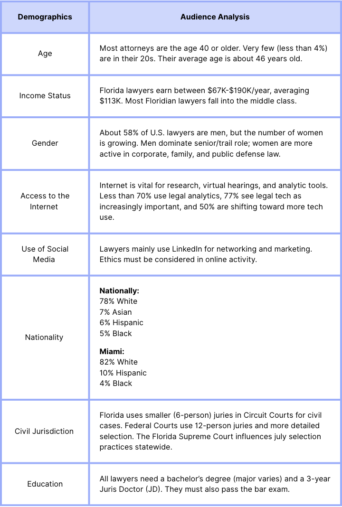
After defining my audience, I created three user personas to represent key user types and their needs. These personas were based on insights from my audience analysis.
I then expanded on each persona using persona posters and an empathy map to better understand user behaviors, motivations, and decision making. For this project, I focused on Efficient Ella.
Tara is a 43-year-old trial attorney with over a decade of experience using digital tools. She adopts new technology quickly to stay competitive. While she is cautious about AI, she recognizes its value in jury research.
Sal is an experienced litigator with nearly 30 years in practice. He is skeptical of jury consultants and prefers relying on his own judgment, but still acknowledges the value Jury-X can provide.
Ella is a young attorney in her early 30s who manages multiple cases at once. She values speed and simplicity and is open to using AI tools to streamline jury selection and reduce confusion.
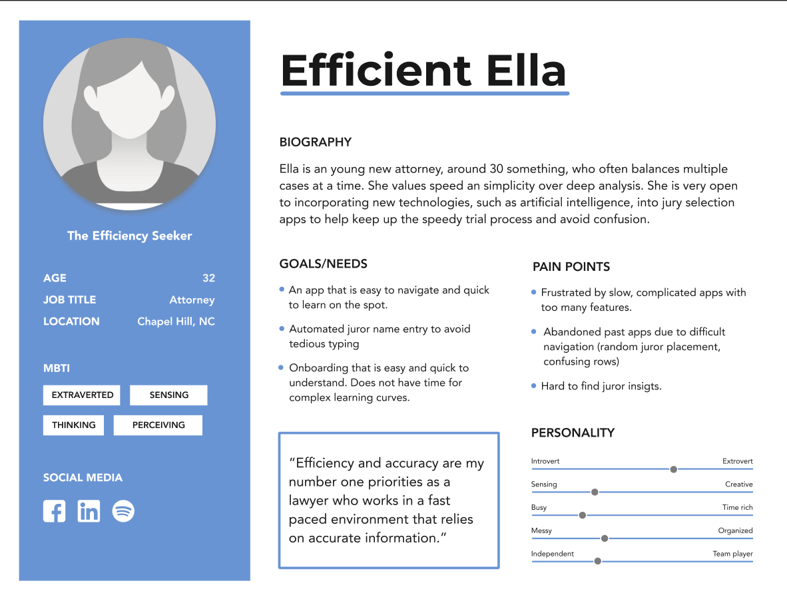
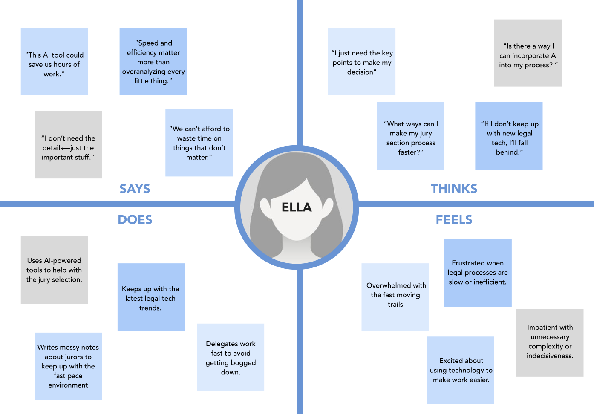
I conducted a card sort to understand where users would expect to find information. This step was crucial in shaping the organization of my Jury X redesign, since unclear navigation was the primary issue driving the project. While the card sort provided a strong foundation, I refined the structure further during the design process. The resulting information hierarchy more clearly illustrates how the website’s content is organized.
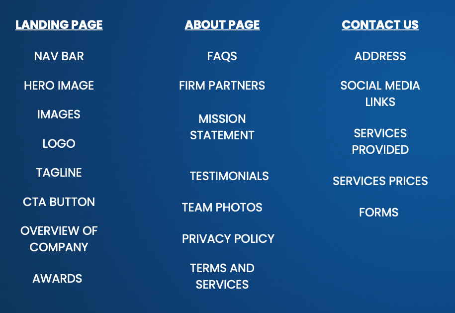
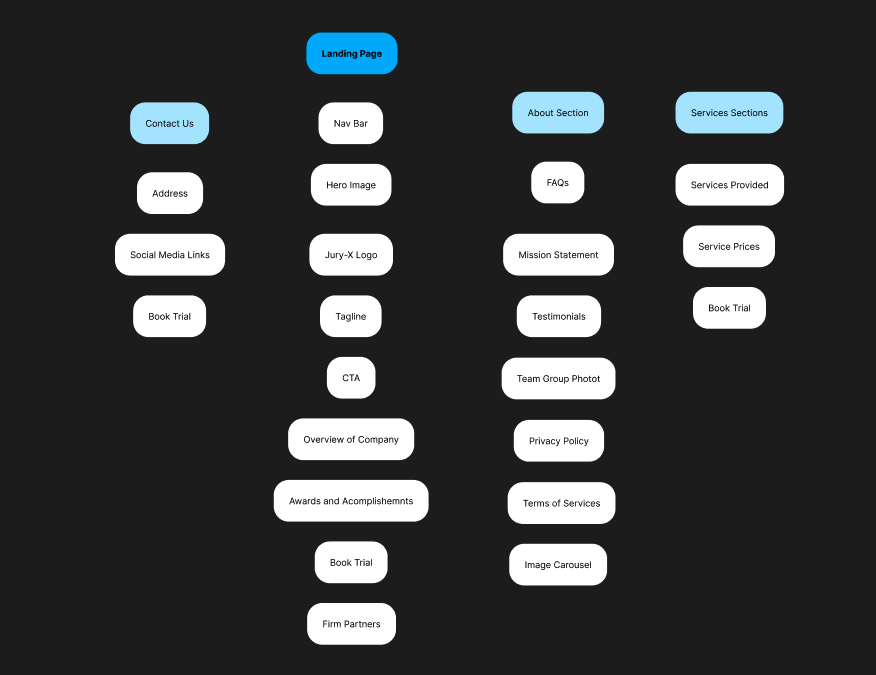
For this redesign, I created two user flows to map how users navigate the site and find key information about Jury X and its services.
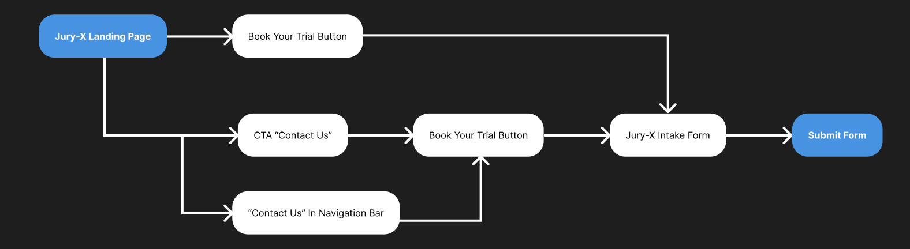
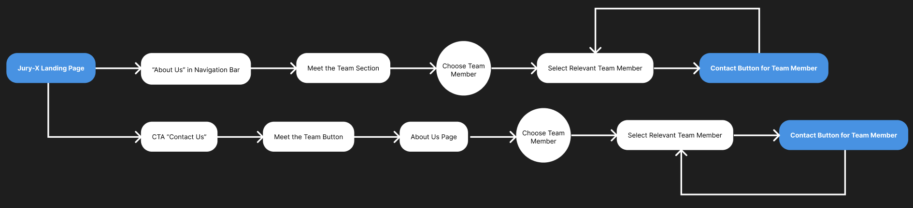
I created low fidelity interactive wireframes to quickly visualize the layout and structure of the site.
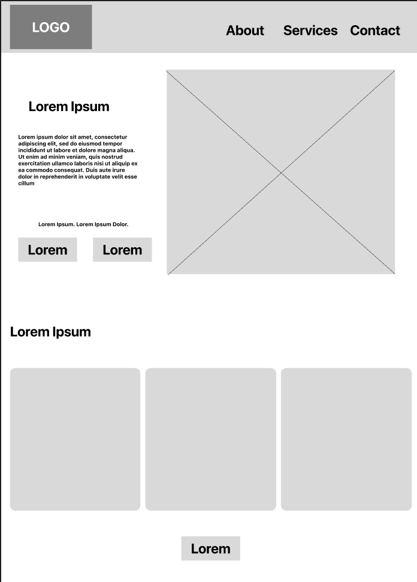
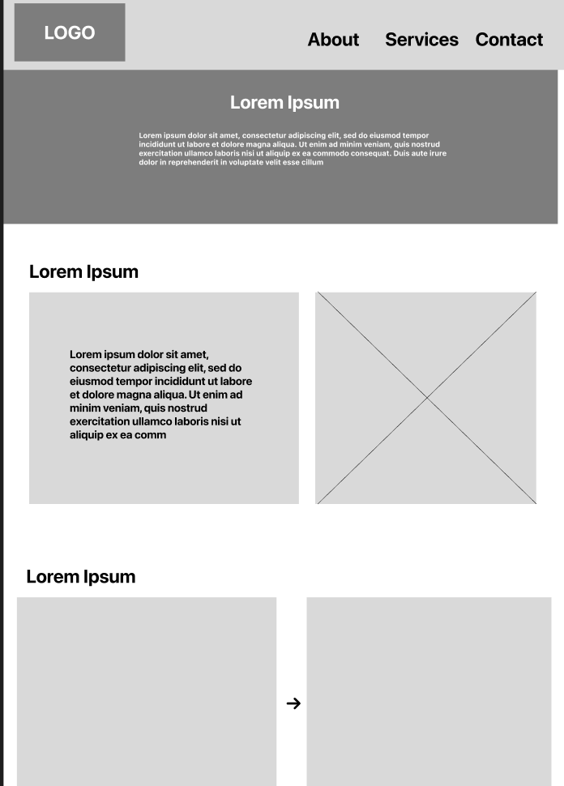
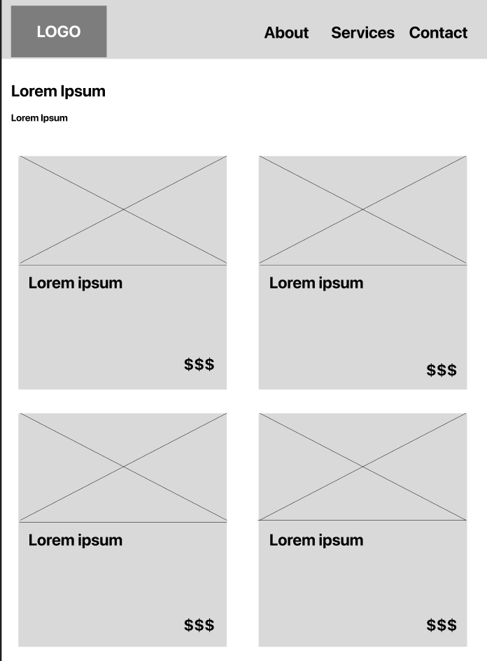
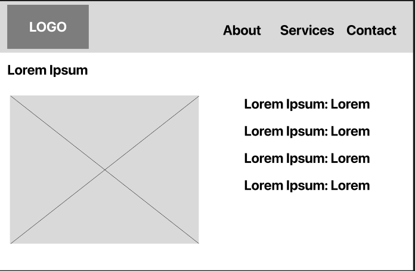
Before creating high fidelity wireframes for the Jury X redesign, I developed a UI style kit focused on strengthening brand identity and ensuring consistency across the interface.
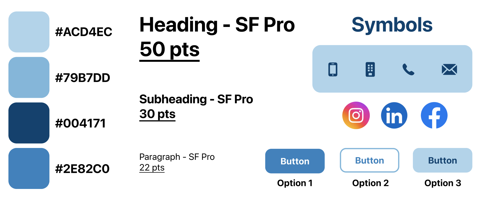
After finalizing the UI style kit, I created high fidelity wireframes to visualize the final product, focusing on a clean interface, clear navigation, and an intuitive user experience.
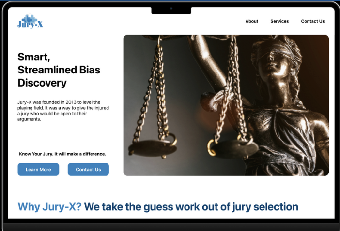
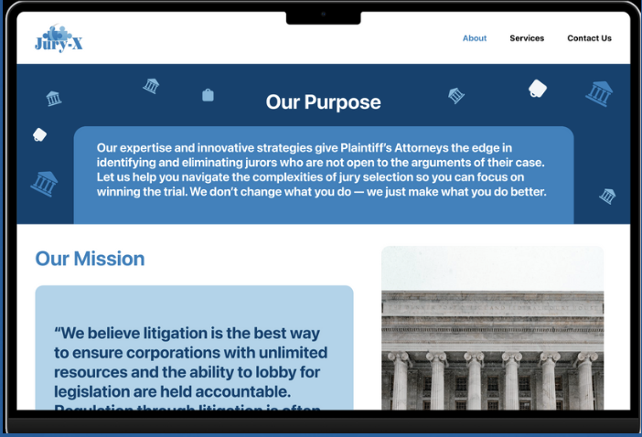
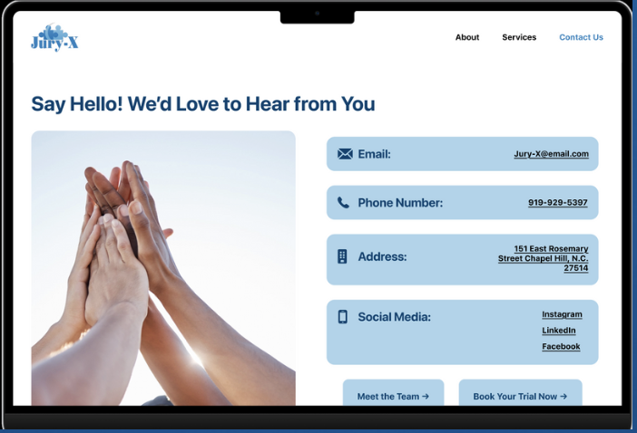
To validate my redesign, I conducted user testing with three legal professionals using UserTesting.com. The goal was to identify areas of confusion and evaluate overall usability.
Overall, users described the interface as intuitive and rated it highly for ease of navigation, confirming that the redesign improved usability.
Reorganize Home Page
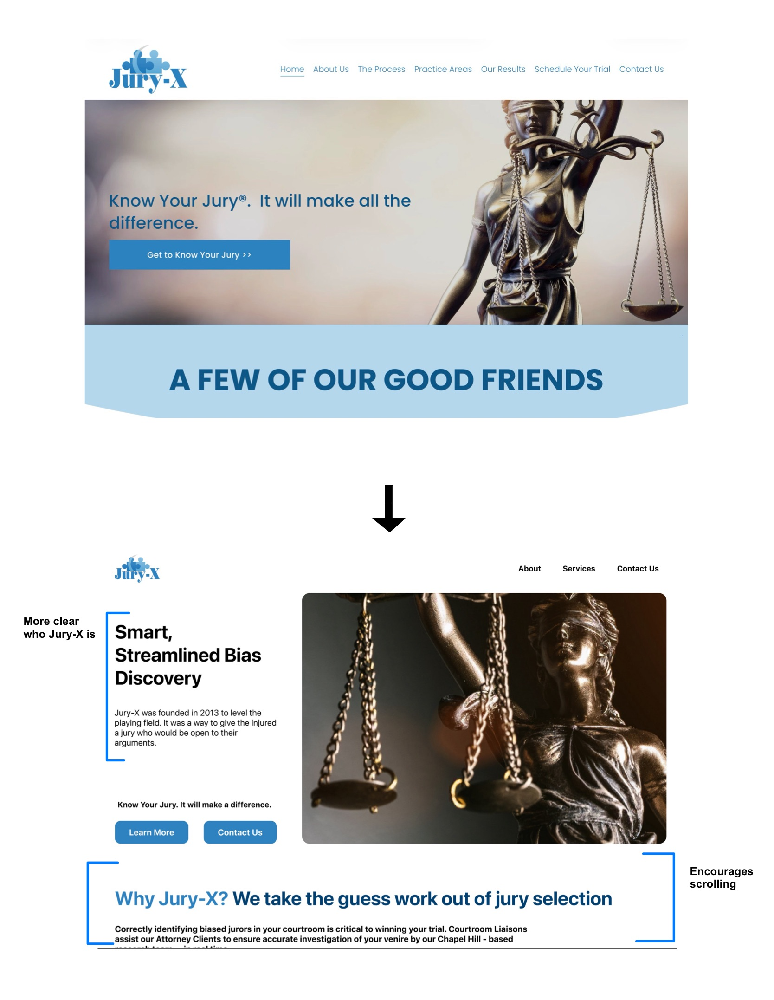
Include Pricing Information
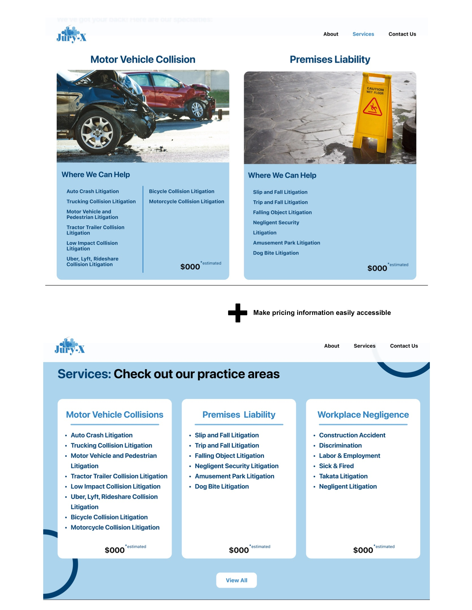
Build User Trust and Credibility
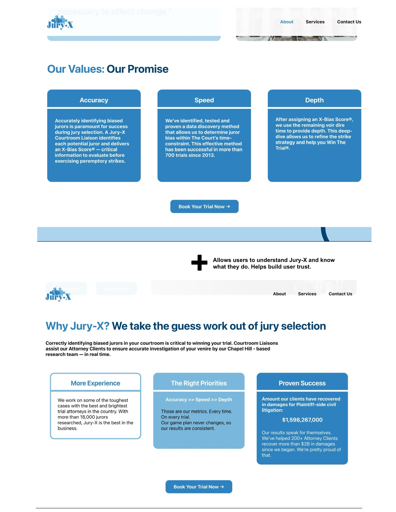
With the design changes complete, my final prototype was ready. The Jury X redesign transforms a confusing, cluttered interface into a clear, user-friendly experience that builds trust and simplifies navigation
This project gave me an in-depth understanding of the UI/UX process. I also learned to leverage various AI tools to assist throughout the Jury X redesign.
The most insightful part for me was the user research. Having had less experience in this area, I really enjoyed connecting research findings to the UI and translating them into actionable design decisions. While this process was challenging, it was also highly rewarding.
Finally, refining the design based on user testing allowed the project to truly come together. Overall, I am proud to have grown both my UI and UX skills through this project.